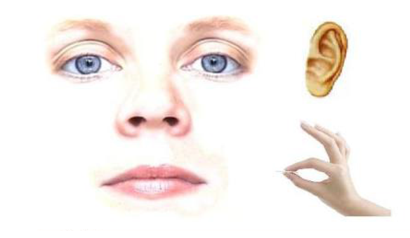

Las sensaciones son el mecanismo que tiene nuestro cuerpo para procesar todos los estímulos que recibe: luz, sonidos, sabores, frío o calor, dolor, olores, incluso las caricias, cosquillas y besos.
Percibimos esas sensaciones por medio de los sentidos, los cuales nos proporcionan la información vital que nos permite relacionarnos con el mundo que nos rodea de manera segura e independiente. Los sentidos son: vista, tacto, olfato, oído y gusto.
Los sentidos son:
